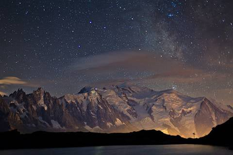
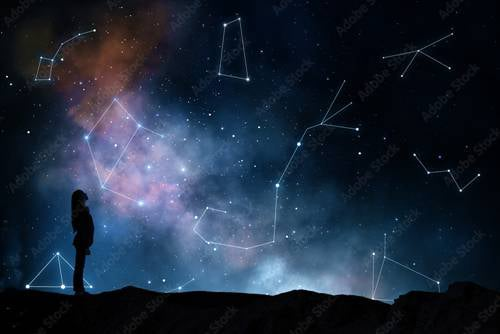

Preporuka za ovaj jedinstveni uređaj za zaštitu od tehničkih i drugih zračenja.
(Uređaj preporučuje i Spasoje Vlajić)

U osnovi atsrologija bi se grubo mogla podeliti na astrologiju zapadnog i astrologiju istočnog sveta.Zapadna astrologija ne veruju da postoji sudbina,dok je istočna astrologija jako vezana za sudbinu i karmu.Ipak obe imaju jednu zajedničku početnu tačku a to je datum rođenja osobe. Astrologija i horoskop su se koristili još u doba Vavilona,a sigurno su je koristile i civilizacije pre nas.Već sam u uvodnom delu nešto pričao o astrologiji i horoskopu,definitivno se radi o naprednim znanjima koja su kao i sve ostalo u svetu velikog brata dosta skrivena.Recimo,postoje razni horoskopi lični,mesečni,nedeljni dnevni,i td.,ali kako dobiti prave i tačne podatke kada se sve zasniva na datumu rođenja i odgovarajućoj konstalaciji u svemiru.Sve bi to bilo u redu,da ta konstalacija nije pomerena za oko 2 nedelje od peroda kada su počeli da se koriste astrologija i horoskop,a još se i kriju neke planete,ili bar jedna i samim tim nikada nećete imati precizne podatke.Može da se dobiju neke iskrivljene slike kao i sve što je u lažnoj matrici u kojoj živimo.Pa ne mislite valda da će da vam daju istinu na ovaj način.U srednjem veku su spaljivali na lomači zbog bavljenja ovakvim znanjima,a danas to ne moraju jer imaju tv.Dovoljno je da puste ove što se sami trpaju da pričaju o tome a pojma nemaju i stvar je završena.Ljudi onda čitaju te razne horoskope po novinama kao neku šalu,što i jeste u ovakvim okolnostima.Upravo to je i bio cilj velikog brata da se ne bavite time.Posebno su smešni ovi dnevni horoskopi koji važe za milijarde ljudi za taj dan,a nisu bolji ni ovi drugi.To bi moglo da se radi na osnovu vaše natalne karte ali pošto nemate prave podatke a ni nekoga ko zna stvarno da radi sa time onda je to uzaludan posao.Astologija i pravljenje horoskopa su toliko kompleksna,vanzemaljska nauka da za sada niko na zemlji ne zna u potpunosti da barate sa time.Sa astrologijom može da se vidi ne samo sudbina i misija pojedinca na zemlji nego i sudbina čitavog svemira.Postoji 10ak ljudi na zemlji koji delimično barataju sa time i to za potrebe globalista uglavnom.Hoću da kažem da sve to postoji ali nedostaje vam jedino prava istina o planetama,znanje i veći kapacitet mozga.A ove što puštaju po tv-u to je zasmejavanje.To su nauke koje će biti interesantne tek u budućnosti.Ono što malo ljudi zna je da je recimo astrologija bila prethodnica astronomije,a recimo od alhemije je nastala hemija i tako redom.Znači od kompleksnije su nastale jednostavnije nauke,zapravo pojednostavljivanje nauke tako da čovečanstvo nazaduje u nauci i to se namerno radi.Znači u materijalnom svetu dok ne opipate nešto to i ne postoji.Verije se samo u postojanje vidljivih i čvrstih predmeta.To treba iz toga da proiziđe.Ne bih sada nabrajao starije napredne civilizacije koje su sve koristile astrologiju i u koje svrhe ali budite sigurni da jesu,koga bude zanimalo saznaće o svemu.

Što se tiče sudbine,ona definitivno postoji.Neki mešaju pojmove sudbina i karma ali to nije baš isto iako jeste povezano.Sudbina za ovaj život vam proizilazi iz karme prethodnih,a sudbina budućih života vam zavisi od karme koju napravite u ovom životu.Priča o sudbini je opet dosta zanimljiva ali i dugačka pa ću probati da skratim.Neki ljudi misle da mogu da menjaju sudbinu i to sa 2% funcija mozga i strašno niskim nivoom svesti,a još kada bi vam rekao da u 3d svetu u kome mi živimo praktično ne postoji ni kreacija,a ni misli nisu vaše,šta ćete onda moći da menjate.Vi ste nešto kao lutke o koncu koje igraju igru koja se diktira iz viših sfera.Uostalom pročitajte u rubici o reinkarnaciji sam objasnio da sami birate život pre rođenja.Sada će se mnogi pitati pa ako je tako koja je svrha svega toga? Da,dobro bi bilo da počnete da razmišljate za početak.Zašto biste vi ovako nesvesni sa 2% mozga odlučivali o vašoj sudbini na zemlji kada to možete da uradite na višedimenzionalnom nivou pre rođenja,gde vam je i svest viša,i imate uvide u bezbroj stvari i okolnosti o kojima sada nemate pojma,kao i u prošle živote(objasnio sam u delu o karmi i reinkarnaciji oko ovoga).Znači vi ste već izabrali život na osnovu svih tih uvida i svi događaji na zemlji su dogovoreni,čak postoji nešto kao ugovor koji je kosmički zakon.Znači kada ste već jednom na zemlji više sile će sve uraditi da prođete kroz ono što vam je sudbina odnosno ono što ste dogovorili i što je potrebno da vežbate.To je potrebno ne samo zbog karme nego i duhovnog napretka i učenja.Ono što eventualno možete da promenite,mada je i to sve ukalkulisano, to je kada se nađete na tzv. Raskrsnici puteva.Znači stigli ste do nekog presudnog momenta i treba da se odlučite kojim putem dalje.Ovo vam se obično dešava svakih 3-5 godina u proseku.I u tim momentima se već zna šta ćete izabrati sa velikom verovatnoćom a i više sile će da vas poguraju baš u tom smeru,međutim desili se ipak da izaberete neku drugu opciju i to je sudbina koja je razmotrena prethodno.Tada neminovno idete tim putem kroz te događaje kao kroz tunel narednih godina do sledeće raskrsnice puteva.Mada zapravo vi ništa niste promenili,u zbiru na kraju celog puta izaćićete na isto.Vežbaćete ono što je zamišljeno sa otežavajućim okolnostima koje će da budu varijacija na temu ,znači nešto drugačije ali u zbiru isto.E sada neću ulaziti u objašnjevanje paralelnih života(to koga bude zanimalo),ali recimo da ako ste u ovom životu skrenuli na jednoj životnoj raskrsnici u jednom pravcu,u paralelnoj dimenziji sigurno nećete ići istim putem,jer bilo bi besmisleno isprobavati istu stvar 2 puta.Recimo uzmimo sada jedan primer,Nikola Tesla se kao dečko još setio svoje misije i video sve šta treba da uradi u životu i šta će uraditi,zapravo video je svoju sudbinu.Ali on je funcionisao sa 20% mozga,znači 10 puta više od prosečne osobe u njegovo vreme.Pa čak ni on nije ni pokušao da promeni sudbinu,naprotiv težio je da je realizuje do kraja i što pre.E sada vi procenite sami gde se nalazite.Pošto se mi danas nalazimo na pragu velikih promena, raste svest ljudi i vremenom će biti moguće menjati sudbinu bar u manjoj meri.Postoji danas u svetu mnogo Nikola Tesli,ali se ne bave naukom,nije im to misija,a i smatraju nauku za nazadovanje i odvajanje od Boga što u stvari i jeste.I nauka će se vremenom potpuno ugasiti ali do toga imamo još mnogo.Mi smo još u fazi lažne nauke,pa onda tek ide prava i td.Šta mislite da bogu treba nauka da bi stvorio nešto? Smešno jel tako?,pa i vi ćete jednom stići do tog nivoa,pravićete i galaksije ali za sada tapkanje u mraku za većinu.Opet dolazimo na poentu,sa povećanjem nivoa svesti povećava se i mogućnost da menjate nešto.Jedino što vam je ostavljeno na volju je kako ćete nešto doživeti od svega što prolazite u životu,na čemu vaš duh vežba da tako kažem.Nadam se da sam vam bar donekle približio shvatanje o ovome. Možete odgledati i igrani film pod nazivom " The Adjustment Bureau",da vidite zašto je tako teško menjati sudbinu.Nije loše prikazano.Kada budete živeli na nivou 5. dimenzije tada ćete moći menjati sudbinu tokom života a i život će praktično biti neograničen odnosno po želji.
Koji su znaci ili kako ćete eventualno znati da li ste na pogrešnom putu ,da li ste izabrali pogrešni pravac .U suštini je jednostavno,šta god da pokušate sva vrata će vam se zatvarati i jednostavno nećete se nikada ni pokrenuti u tome čak iako imate veliku želju.Da pojasnim,ako pokušate neki pravac u životu koji nije planiran za vas i vi sada samo zato što ste videli na tv-u ili od prijatelja da oni tako rade a vama se to baš i ne radi i nemate ni želju ali ipak da probate to zaboravite ili vam neće ići ili će biti katastrofalni rezultati iako možda radite sve kako treba.Jednostavno nema podrške sa viših nivoa i to mora da se ugasi.S druge strane ako za taj isti pravac postoji i velika želja to bi već mogao biti dobar znak ali ukoliko će smetati u realizaciji vašeg životnog plana koji je određen još pre rođenja i to možete da zaboravite.Neće vam nikada uspeti koliko god pokušavali.E sada treba razlikovati još nešto,obično kada vam je nešto suđeno i jeste vaš životni put to će vam dobro ići bar neko vreme na koliko je oročen taj pravac kretanja jer ništa nije večno,i u jednom trenutku života i to će se prekinuti i odjednom vam iako sve isto radite više ni malo neće ići i to je vreme da prekidate s tim koliko god teško bilo.Ali kada krenete na taj put koji vam jeste sudbinski određen u početku obično će biti jedna malo veća prepreka i hoću reći ne treba odmah odustati jer to je neka vrsta testa sa višeg nivoa postojanja da vas testiraju koliko vam je zapravo stalo i još po nešto.Na osnovo toga se određuje na neki način i dužina trajanja nekog pravca kretanja.Astologija i vaš lični horoskop mogu da utiču na sudbinu tako što će stvarati povremeno teške aspekte i biće vam teže na tom putu kojim se krećete ili u periodu lakših aspekata biće vam lakše na tom putu što je uobičajen način kretanja u našoj 3d realnosti.To je i neminovan način kretanja svih događaja u našoj realnosti,znači teško-lako naizmenično,toplo-hladno naizmenično,rat ili mir naizmenično,zdravlje -bolest naimenično,uvek postoji bar jedna osoba koja će da vam bude dežurni provokator u vašoj blizinii td.Smatra se da to ubrzava evoluciju u našoj 3d realnosti,a pošto se čovek teško pokreće da sam radi na nekom ozbiljnijem duhovnom razvoju ,ovo mora da se dešava.Pa čak i da radi na duhovnom razvoju opet će mu se dešavati,možda malo manje ali ipak naš 3d matrix je takav.I vanzemaljac kada dođe na zemlju i duže boravi ovde počeće da se razboljeva tada i on podleže zakonima našeg matriksa samo što on ima načina i da se brzo izleči.

Ovde možete napraviti manju ili veću kupovinu onoga što je na stranici knjige ,kontakt i porudžbine objašnjeno.Znači moguće su 2 vrste porudžbine :
1.Manja kupovina se tretira više kao donacija ali za uzvrat ipak dobijate jednu vrlo zanimljivu knjigu u pdf-u o Nikoli Tesli koja će vas oduševiti,spada u raritete i malo se zna o ovome.Vrlo poučna stvar.
2.Veća kupovina podrazumeva kompletan detaljan materijal o ovim temema sa sajta koji je objašnjen na stranici knjige ,kontakt i porudžbine i ima oko 50gb i nakon poručivanja možete preuzeti preko linka ili za one u Srbiji može i pouzećem.Za one koji plaćaju preko linka ispod, izaberite opciju 60 evra.To se podrazumeva da je ova porudžbina.Oni koji hoće pouzećem neka me kontaktiraju.
Prilikom procedure kupovine uloliko ste za manju kupovinu ili donaciju možete izabrati jedan od već ponuđenih iznosa ili jednostavno u polje gde piše iznos vi upišite svoj iznos po želji,a za veću porudžbinu kao što rekoh birate 60 evra opciju.Nakon završenog plaćanja bićete kontaktirani preko emaila u roku 24 časa i dobićete ili link za preuzimanje ako je veća porudžbina ili knjigu na email ako je manja.
Preporuka za ovaj jedinstveni uređaj za zaštitu od tehničkih i drugih zračenja.
(Uređaj preporučuje i Spasoje Vlajić)